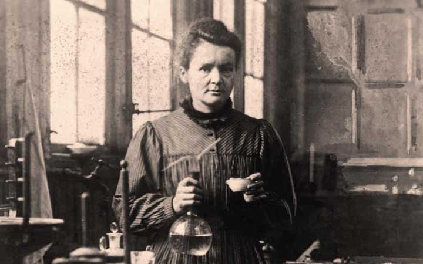
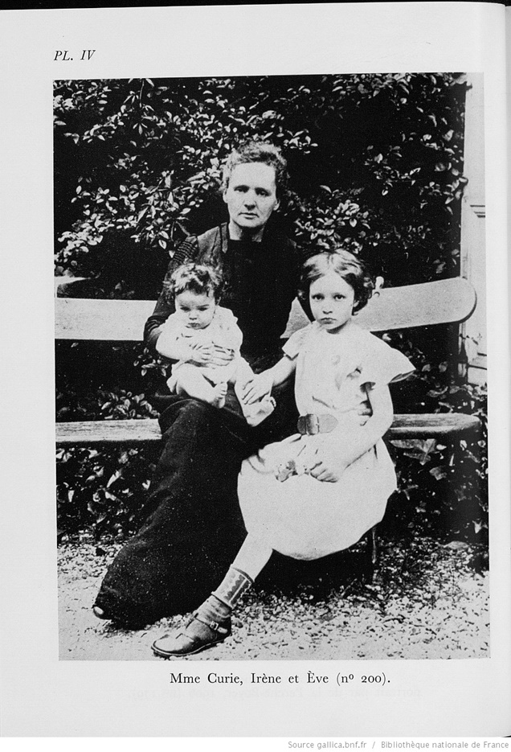
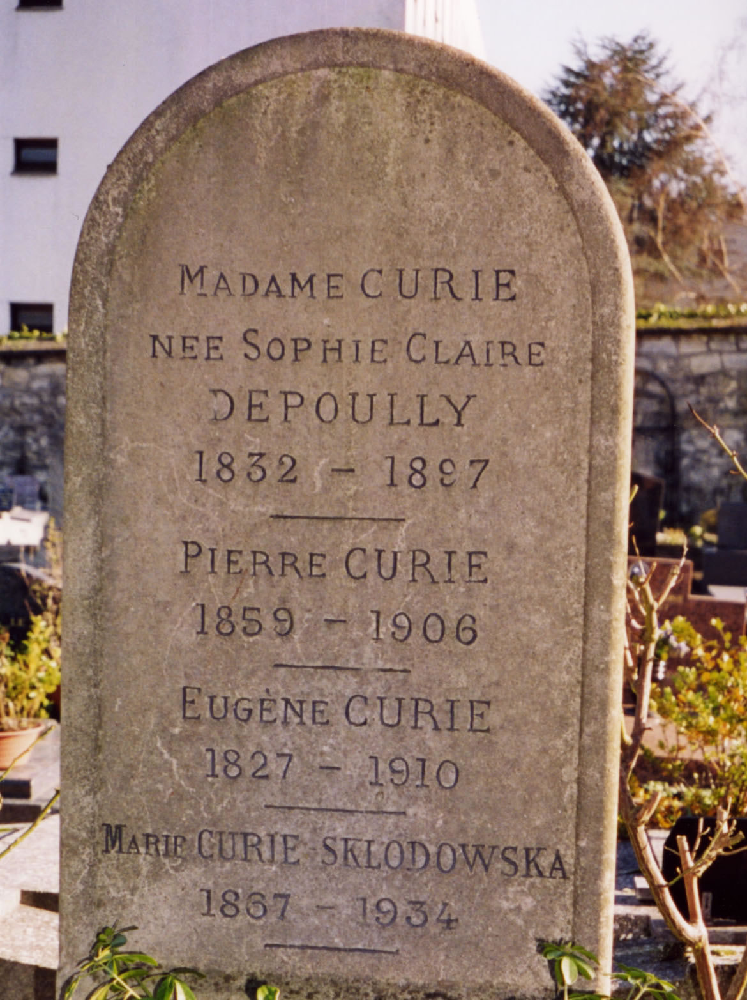

Marie Curie
Marja Sklodowska Curie หรือที่รู้จักในประเทศฝรั่งเศสว่า มารี คูรี
(Marie Curie)
เป็นนักเคมี-ฟิสิกส์ฝรั่งเศสเชื้อชาติโปแลนด์ผู้ได้รับรางวัลโนเบลสาขาเคมีและสาขาฟิสิกส์
จากผลงานการศึกษาธรรมชาติของกัมมันตรังสีและการพบธาตุเรเดียม (radium) กับพอโลเนียม (polonium)
นอกจากผลงานอันโด่งดังนี้แล้วเธอยังเป็นสตรีคนแรกที่ได้รับดุษฎีบัณฑิต
เป็นศาสตราจารย์สตรีคนแรกแห่งมหาวิทยาลัยซอร์บอนน์ในปารีส
และเมื่อหนังสือชีวประวัติ Madame Curie
เรียบเรียงโดย Ève Curie บุตรสาวของเธอ ออกวางจำหน่าย
เธอก็ได้กลายเป็นนักวิทยาศาสตร์ที่โลกรู้จักดีเป็นอันดับ 2 รองจาก อัลเบิร์ต ไอน์สไตน์
Marja Sklodowska เกิดที่กรุงวอร์ซอในโปแลนด์ เมื่อวันที่ 7 พฤศจิกายน
ค.ศ. 1867
ช่วงที่รัสเซียยึดครองโปแลนด์ คนโปแลนด์จำนวนมากที่ต่อต้านรัสเซีย
จะถูกฆ่าจำคุกหรือถูกเนรเทศไปไซบีเรีย
นอกจากนี้รัฐบาลรัสเซียยังบังคับให้นักเรียนโปแลนด์ทุกคนต้องเรียนภาษารัสเซียเพื่อไม่ให้ชาวโปแลนด์มีภาษาของตนเอง
ทั้งไม่สนับสนุนให้ชาวโปแลนด์ได้รับการศึกษาขั้นสูง
ยิ่งถ้าเป็นสตรีก็ยิ่งถูกปิดกั้นโอกาส เด็กหญิง Marja
ผู้ใฝ่รู้จึงสมัครไปเรียนต่อที่มหาวิทยาลัยคราโคว์ในกรุงคราโคว์
ซึ่งขณะนั้นตกอยู่ในความปกครองของออสเตรียเด็กหญิงจึงเปลี่ยนความตั้งใจไปเรียนต่อที่ฝรั่งเศสแทน
เพราะเธอพูดภาษาฝรั่งเศสได้คล่อง และสตรียุโรปเช่นผู้หญิงอังกฤษ
ที่ต้องการเรียนแพทย์ก็มักเลือกไปฝรั่งเศส
เธอจึงสมัครไปเรียนต่อที่มหาวิทยาลัยซอร์บอนน์ในกรุงปารีสและได้รับการตอบรับเพราะฝรั่งเศสเห็นอกเห็นใจชาวโปแลนด์ที่ถูกกดขี่

แต่การเดินทางไปศึกษาต่อต่างประเทศต้องใช้เงินมาก เธอกับพี่สาว
Bronya
จึงผลัดกันไปเรียนโดยเธอทำงานเป็นครูสอนพิเศษหาเงินส่งพี่สาวให้เรียนจบแพทย์ก่อน
จากนั้น Marja จึงออกเดินทางไปศึกษาต่อโดยให้พี่สาวหาเงินส่งเธอเรียนบ้างในปี 1891 Marja วัย 24 ปี
ซึ่งเปลี่ยนชื่อต้นเป็น Marie(เป็นชื่อฝรั่งเศส)
ได้เข้าเรียนฟิสิกส์กับคณิตศาสตร์ที่มหาวิทยาลัยซอร์บอนน์ อีก 2ปี
ต่อมาเธอก็สำเร็จการศึกษาระดับปริญญาโทสาขาฟิสิกส์
และปริญญาโทสาขาคณิตศาสตร์ในอีก 1 ปีให้หลัง

เดือนเมษายน 1894 มารีเข้ารับตำแหน่งหัวหน้าห้องปฏิบัติการแห่ง
Municipal School of Industrial Physics and
Chemistry ที่ปารีส และได้เข้าฟังการสอบวิทยานิพนธ์ระดับปริญญาเอกของ
ปิแยร์ คูรี (Pierre Curie) หนุ่มวัย 36 ปี ที่มหาวิทยาลัยซอร์บอนน์ เธอตกหลุมรักชายหนุ่มรูปร่างสูงสง่า
นัยน์ตาและผมสีน้ำตาล ใบหน้าเหลี่ยม บุคลิกเรียบง่าย
ยิ่งเมื่อได้พบว่าปิแยร์รักวิทยาศาสตร์เหมือนกัน
ในที่สุดทั้งคู่ก็ตัดสินใจแต่งงานเมื่อวันที่ 26 มิถุนายน
ค.ศ.1895 โดยจัดพิธีแบบเรียบๆ ที่ไม่ต้องใช้แหวนหมั้น
จากนั้นเดินทางไปดื่มน้ำผึ้งพระจันทร์ด้วยการขี่จักรยานเที่ยวในฝรั่งเศส ปี 1897
มารีให้กำเนิดบุตรสาวคนแรกชื่อ Irène และในเดือนธันวาคม 1904 มารีให้กำเนิดบุตรสาวคนที่ 2 ชื่อ Ève
เมื่อถึงวันที่ 19 เมษายน ค.ศ. 1906 ขณะกำลังจะเดินข้ามถนน
ปิแยร์ถูกรถม้าชนและถูกล้อรถบดกะโหลกศีรษะแตกเสียชีวิตทันที
(สาเหตุอาจจะเกิดจากอาการใจลอยเพราะสูดดมก๊าซ radon เข้าสู่ร่างกายมากเกิน)

ในปี 1898 มารีได้นำแร่ pitchblende
ซึ่งเป็นแร่สีดำแข็งมาวิเคราะห์จนพบธาตุใหม่ 2 ธาตุ คือ พอโลเนียม
(ซึ่งเธอตั้งชื่อตามประเทศบ้านเกิดของเธอ) และเรเดียมซึ่งมีสีเงินเรืองแสงได้
และได้พบว่าธาตุเรเดียมนี้ปล่อยรังสีออกมารุนแรงกว่ายูเรเนียมราว 900 เท่า ในปี 1902
เธอก็สกัดแร่เรเดียมบริสุทธิ์ได้ และประจักษ์ว่าแร่มีกัมมันตภาพรังสีรุนแรงมากจนผิวของปิแยร์ถูกเผาไหม้
ทำให้จับมีดและส้อมไม่ได้ เมื่องานวิจัยสิ้นสุด
สุขภาพของสองสามีภรรยาก็เริ่มทรุดโทรมเดือนมิถุนายน ค.ศ.
1903 มารีวัย 36 ปี ได้รับปริญญาดุษฎีบัณฑิตสาขาฟิสิกส์ ถึงเดือนพฤศจิกายน
ปีนั้นทั้ง อองตวน เบกแครล
และสามีภรรยาคูรีก็ได้รับการประกาศว่าเป็นผู้พิชิตรางวัลโนเบลสาขาฟิสิกส์ประจำปี 1903
จากผลงานการพบปรากฏการณ์กัมมันตรังสีของเบกแครล
และการศึกษาธรรมชาติของสารกัมมันตรังสีของมารีและปิแยร์ คูรี (radioactivity
เป็นคำที่มารีคิดขึ้นใช้คนแรก) ในปี 1911 มารี คูรี ได้รับการประกาศให้
ได้รับรางวัลโนเบลสาขาเคมีแต่เพียงผู้เดียวจากการพบธาตุเรเดียมและพอโลเนียม

ช่วงสุดท้ายของชีวิตมารี กูรีในปี ค.ศ. 1933
มารีได้ทำการจัดตั้งมูลนิธิ Curie Foundation
เพื่อให้ทำหน้าที่ในการสนับสนุนการวิจัยด้านงานวิทยาศาสตร์บริสุทธิ์
และสนับสนุนทางการแพทย์ และในปี ค.ศ. 1953
สถาบันแห่งนี้ได้กลายเป็นต้นแบบของสถาบันวิจัยมะเร็งในหลายประเทศ
และเริ่มใช้งานด้านวิทยาศาสตร์เข้ามามีส่วนร่วมส่งเสริมคุณภาพชีวิตของสังคมมากขึ้น
เมื่อมารีอายุ 58 ปี สุขภาพของมารีก็เริ่มทรุดโทรมหนักมากขึ้น
มารีเริ่มมีอาการหูหนวก ตาบอด
และมีรอยไหม้ที่ตามมือของมารีผลมาจากการที่มารีใช้เวลาทำการทดลองรังสีต่างๆ
ทำให้ถูกรังสีจากสารกัมมันตภาพรังสีแผดเผามารีในเวลาต่อมามารีจึงป่วยหนักด้วยโรคมะเร็งเม็ดเลือดขาว
และเข้ารักษาตัวอยู่ที่โรงพยาบาลโอตซาวัว (Haute Savoie) และเสียชีวิตในวัย 67 ปี เมื่อวันที่ 4 กรกฎาคม
ค.ศ. 1934
ในปี 1995 ศพของมารีและปิแยร์ คูรี ถูกนำไปฝังที่ Panthéon
ในกรุงปารีสอันเป็นสถานที่ฝังศพบุคคลสำคัญของฝรั่งเศสต่อมารัฐบาลฝรั่งเศสได้จัดพิมพ์ธนบัตร
500 ฟรังก์ที่มีภาพของทั้งคู่สำหรับ อีแรน คูรี ก็ได้สมรสกับ เฟรเดริก โฌลิโอ (Frédéric Joliot)
และคนทั้งสองได้รับรางวัลโนเบลสาขาเคมีประจำปี
1935 จากผลงานการสร้างธาตุกัมมันตรังสีประดิษฐ์ที่ไม่มีในธรรมชาติ
แต่เป็นที่น่าเสียดายว่ามารีเสียชีวิตก่อนจะได้เห็นผลงานอันน่าภาคภูมิใจนี้
ชีวิตของ มารี คูรี
เป็นชีวิตที่ทำงานวิทยาศาสตร์ซึ่งขณะนั้นสังคมไม่ยอมรับเพราะคิดว่าผู้หญิงสนใจเฉพาะเสื้อผ้า อาหาร
และความงาม ส่วนผู้ชายสนใจวิทยาศาสตร์
ความจริงที่มีหลักฐานและอำนาจแต่ มารี คูรี
ได้ปฏิวัติความคิดนี้จนทำให้เธอเป็นนักวิทยาศาสตร์สตรีที่โลกรู้จักดีที่สุดคนหนึ่งด้านชีวิตส่วนตัวเธอเป็นคนรักชาติมาก
ทำงานหนัก ดูแลครอบครัวในฐานะแม่ม่ายลูกสอง
และเลี้ยงลูกได้ดีทั้งสองคน
นอกจากนี้เธอยังทำงานวิทยาศาสตร์โดยไม่มุ่งหวังจะร่ำรวยเพราะเธอไม่ได้จดสิทธิบัตรสิ่งที่เธอค้นพบ
เธอจากโลกนี้ไปอย่างสุขใจเพราะรู้ว่าผลงานที่เธอทำได้รับการสานต่อ
ชีวิตที่มีครอบครัวสมบูรณ์แบบและประสบความสำเร็จในการทำงานสูงมากทำให้โลกรู้สึกสูญเสีย
เมื่อเธอต้องจากโลกนี้ไปปี 2011 นี้ ยูเนสโกประกาศให้เป็นปีเคมีสากล International Year of
Chemistry และ 1 ใน 4 ของกิจกรรมที่ทั่วโลกจัดเฉลิมฉลองปีเคมีสากล
คือการสดุดีความสำเร็จในโอกาสครบ 100 ปีการรับรางวัลโน